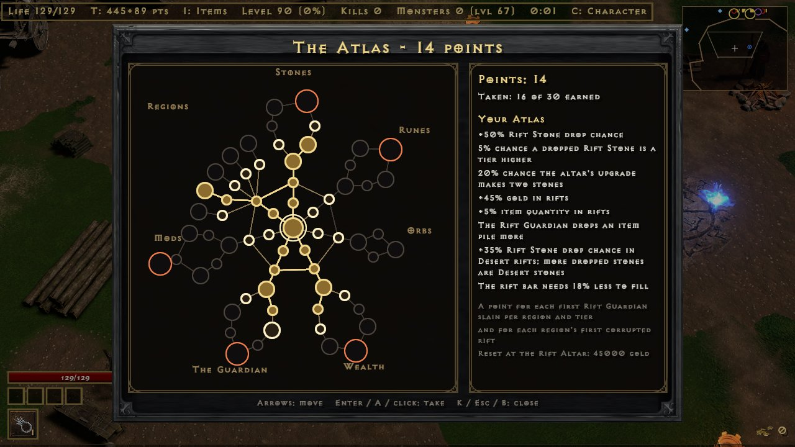

Campaign mode
A faster Diablo II. Pick Campaign on the title screen, make a character, and play through five acts, then Nightmare and Hell. There are no waves and no respawns: packs stand along the road, each act has a town, and the act's boss waits at the end. The numbers on this page are the game's own.


Characters
- New Character picks a class and two choices that stay with the character: Hardcore and Classic casting.
- Each character is a row on the Characters screen. Continue where you left off, or go back to a Cow Level you have opened.
- Your character saves on its own as you play, and from the Esc menu. Saves are in the
savesfolder next to the game; updates never touch it.
Towns and townsfolk
Each act's town is the act's one safe place. D2's people stand in it and do their D2 jobs. Walk up and press E (pad A) to talk.
| Job | Who | Does |
|---|---|---|
| Healer | Akara, Fara, Ormus, Jamella, Malah | Fills life and mana for nothing |
| Trader | Akara, Gheed, Drognan, Lysander, Elzix, Ormus, Asheara, Alkor, Jamella, Malah, Anya | Sells D2's stock at D2's prices, rolled again on each visit; buys your items and sells them back |
| Smith | Charsi, Fara, Hratli, Halbu, Larzuk | Adds a socket: 500 gold plus a quarter of the item's price |
| Gambler | Gheed, Elzix, Alkor, Jamella, Anya | D2's gamble list: unseen items for gold, cheaper at low levels |
| Reset | Akara | Gives back all stat and skill points: 300 gold per character level |
The stash stands in town too: F beside it opens the inventory and stash; B opens them anywhere. Alkor also sells Thawing and Antidote potions.


Waypoints and act bosses
- Waypoints are D2R's own. Stand at one and press V to travel: a tab per act, and any waypoint you have reached.
- Each act ends at its boss: Andariel, Duriel, Mephisto, Diablo and Baal. A beaten boss leaves a portal on to the next act, and you can come back to farm it.
Lairs
- Act I: Bone Ash guards the way into the Catacombs, D2 mazes from Level 1 to 4. Act I's last waypoint is on Level 4, by the way down to Andariel.
- Act II: Ancient Kaa the Soulless guards the door of Tal Rasha's Tomb, past the last campfire. The tomb is a D2 maze; Tal Rasha's Chamber holds Act II's last waypoint and the way down to Duriel's Lair.
- So a boss run is a waypoint, a short walk and the boss.
- Caves and lairs are well lit: your light reaches further underground.


Normal, Nightmare, Hell
- Beating Baal opens Nightmare; beating Baal on Nightmare opens Hell.
- Monsters use D2's own Nightmare and Hell life, damage, experience and monster levels.
- Your resistances drop by 40 on Nightmare and 100 on Hell, as in D2.
Death, softcore and hardcore
- Softcore: you wake in the act's town. On Nightmare you lose 5% of your current level's experience, on Hell 10%; on Normal nothing. You never lose a level.
- Hardcore: one life. A dead hardcore character stays on the list, greyed out.
- Softcore and hardcore characters each have their own shared stash.
Items
- Monsters drop real D2 items from their treasure classes: white, magic, rare, set and unique, with D2's affixes, sockets and ethereal.
- Uniques and sets drop four times as often as in D2 (a shorter game). Magic find works as in D2.
- Gems, runes and jewels go into sockets: drop one onto a socketed item. Gems give different stats in weapons, helms and shields.
- Runewords: the right runes in the right order on a white or superior base, with exactly that many sockets, make D2's runeword. The Guide (H) lists all of them and which ones you can make now.
- Set bonuses count, for part of a set and for the full set.
- Class items roll D2's automatic mod every time: Amazon bows, spears and javelins their skill tab, Sorceress orbs life or mana, Paladin shields all resistances or attack rating, Necromancer heads poison damage, Warlock grimoires magic or fire damage. Staves, wands, scepters, orbs, heads, Barbarian helms, Druid pelts, claws and daggers roll D2's +skill mods for their class.
- Item drop and pickup sounds are D2's. The Guide shows the drop chances of runes and gems.
Inventory, stash and belt
- I (pad X) opens a 10x8 inventory with a paperdoll. Enter or a click wears, takes or puts an item; Delete drops the item under the cursor.
- What you wear shows on your 3D model, and tooltips compare an item with the one you have on.
- Charms have their own tab beside Orbs, Runes and Gems: a big 20x16 grid as tall as the inventory screen. Only charms in the Charms tab add their stats; charms in the bag or the stash do nothing. Your level must meet the charm's, and only one of each unique charm works (Annihilus, a Torch, Gheed's Fortune). Rare charms have no such limit.
- A charm you pick up goes straight into the Charms tab when it fits. If it can't, it goes in the bag and a line says why: No room, Needs level 30, Already using Annihilus.
- Click a charm to pick it up, then click to put it in the tab or the bag. Clicking with an item in hand on another item it can't go over picks that one up instead. Right click (pad A) moves a charm between the bag and the tab, and opens the tab. Orbs work on charms in the tab.
- Charms from an older save go in the tab's top left. Ones that overlap, sit off the grid or repeat a unique are moved to a free cell or the bag, so nothing is lost or stuck.
- Rare charms: about one magic small, large or grand charm in twelve drops rare instead (more with magic find). It has 3 or 4 mods, never two of one kind, and a yellow name. An Orb of Ascension makes a magic charm rare too. Every stat and tier: Charm rolls.
- The shared stash is 10x10, for all your characters of the same kind (softcore or hardcore).
- B (pad R3) opens the inventory with the stash beside it anywhere: in an act, a cave, the cow farm, a rift or town. Items move both ways, as at the stash.
- Ctrl+click (pad R3) on an item in the bag or the Charms tab sends it to the stash's first free spot, with the stash open or not. Worn items stay. If it does not fit, The stash is full and the item stays. Ctrl+click on an item in the stash brings it back to the bag.
- Potions you pick up fill the belt (its rows depend on the belt you wear). Drink with 1-4 or pad B.
- Runes and gems stack in their own tabs under the bag (R or pad RB goes round the orbs, runes, gems and charms).
- Rune upgrades, without a Horadric Cube: on the Runes tab, point at a rune and press U (pad Y, or the Up button). It follows D2R's cube recipe: 3 of El to Ort make the next rune; Thul to Lem take 3 and a gem; Pul and up take 2 and a gem. The gem comes from the Gems tab, and the tooltip names it. J (pad LB, or the Down button) breaks one rune into 2 of the rune below.

Stats, skills and casting
- Each level gives 5 stat points and 1 skill point. T (pad Y) opens the stat and skill screen; the run stands still while it is open.
- The skill tree is your class's real three tabs. Each skill needs its D2 level and the skills it builds on.
- Life comes from Vitality and mana from Energy, with your class's numbers. Strength adds melee damage, Dexterity bow and throwing damage.
- Auto casting (the default): skills cast themselves and cost no mana.
- Classic casting (chosen when the character is made): left and right mouse cast the left and right skill, with D2's mana. When a skill can't be paid for or used with the weapon, you swing a normal attack.

Quests
Seven of D2's quests, each once per difficulty. The giver in town pays the reward. A lasting bonus stays with the character; you pick one of three, and the giver changes it later for 100 gold per character level.
| Act | Quest | Giver | Goal | Reward |
|---|---|---|---|---|
| I | Den of Evil | Akara | Clear the cave | +1 skill point |
| I | Sisters' Burial Grounds | Kashya | Slay Blood Raven | Lasting: +30 life, +50 defense or +20% damage |
| II | Radament's Lair | Atma | Slay Radament | +1 skill point |
| III | Lam Esen's Tome | Alkor | Slay Sarina the Battlemaid | Lasting: +5 all attributes, +50 mana or +10% faster cast rate |
| IV | The Fallen Angel | Tyrael | Slay Izual | +2 skill points |
| V | Siege on Harrogath | Larzuk | Slay Shenk the Overseer | Larzuk's Chisel (adds a socket) |
| V | Rite of Passage | Qual-Kehk | Slay the Ancients | Lasting: +10% all resistances, +10 all attributes or +60 life |
Act bosses pay no skill points; the quests do, the D2 way.
Caves and dungeons
- A named super-unique pack guards each cave. Kill them and the cave opens; press G (pad L3) by it to go in.
- Inside: chambers and tunnels, sleeping packs and a champion pack. Clearing a cave gives a rare-or-better item, and it stays cleared for that character on that difficulty.
- Hold G (or L3) inside to leave.
- The Catacombs and Tal Rasha's Tomb lead down to the act bosses; see Lairs.
Rune farms
- The Forgotten Tower: its door stands off Act I's Black Marsh, marked on the map and minimap. G (pad L3) by it goes in. A few cellars on D2R's crypt tiles lead down to the Countess and her pack.
- The Countess drops her D2 treasure: her items, plus a roll of her own rune class every kill. That class goes up to Ral on Normal, Io on Nightmare and Ist in Hell.
- The tower is laid afresh every time you go in, the Countess with it. A run takes about a minute.
- The Hellforge: in Act IV, Hephasto the Armorer and his pack guard the forge (an orange mark on the map). Slay him, then press G by the forge for one rune. No hammer is needed.
- Every rune in the forge's range is equally likely: El to Amn on Normal, Sol to Um on Nightmare, Hel to Gul in Hell.
- The forge works once per kill. Coming back into Act IV brings Hephasto back. On a finished Act IV, a waypoint trip after his death does too.
- Normal rune odds and magic find are D2's. The Guide's Drop chances page lists the Countess and the Hellforge.
Crafting orbs
Orbs sit in wells under the inventory grid. Click an orb, then the item. The Guide's Orbs tab says the same in the game.
| Orb | Does |
|---|---|
| Orb of Enchanting | White item to magic |
| Orb of Reforging | Rerolls a magic item's affixes |
| Imbue Orb | White item to rare |
| Orb of Turmoil | Rerolls a rare item's affixes |
| Horadric Orb | Adds an affix |
| Orb of Fate | Rerolls the numbers, keeping the affixes |
| Larzuk's Chisel | Adds a socket |
| Orb of Unmaking | Magic or rare item back to white |
| Hellforge Ember | Adds or replaces one red mod |
| Orb of Ascension | Magic to rare, keeping its affixes and adding one. Works on charms too |
| Abyssal Shard | Adds a second, different red mod to an item with one. One time in three the item shatters. If it lives, it is Corrupted: no orb takes it again |
Red mods
A Hellforge Ember adds one red mod to a weapon, armor, jewelry or a charm, or a new one in place of the one it has. Each kind of item has its own red mods, below. Their numbers grow with the item level: a low item rolls near the bottom of the range, and from item level 85 a roll lands in the top half. Mods marked (rare) come up less often. An Abyssal Shard adds a second one of another kind. Red mods show in red under the item's other stats; a Corrupted item ends in a red Corrupted line. The Abyssal Shard drops from kills and chests like the other orbs, in every act and difficulty, about half as often as the Ember.
A charm's red mods are its own: +1 to all skills, 5-10% faster cast rate, 5-10% faster run/walk, 8-15% magic find, +15-30 life or 15-30% extra gold. A corrupted charm still works in the Charms tab; rare charms can be corrupted too.
| Red mod | Range | Goes on |
|---|---|---|
| +1 projectile | +1; +2 one time in 8 | Bows, crossbows, throwing weapons, staves, wands and orbs |
| Chance to cast a skill on a critical strike | 20-40% | Weapons |
| Chance to cast a skill on striking | 5-15% | Weapons |
| Deadly Strike | 5-15%, +1% per 10 item levels, 30% at most | Weapons |
| + to all skills | +1 | Staves, wands, orbs and sceptres |
| + to all skills | +1 | Helms, body armor, shields, gloves, boots and belts (rare) |
| + to all skills | +1 | Amulets and rings |
| Increased attack speed | 10-30% | Weapons |
| Increased attack speed | 10-20% | Gloves |
| Chance of crushing blow | 5-15% | Weapons |
| Chance of open wounds | 10-25% | Weapons |
| Enhanced damage | 20-60% | Weapons |
| Life stolen per hit | 3-8% | Weapons |
| Faster cast rate | 10-20% | Weapons |
| Faster cast rate | 5-15% | Helms, body armor, shields, gloves, belts, amulets and rings |
| Less enemy fire, cold, lightning or poison resistance | -5-15% (one element each) | Weapons |
| Chance to cast a skill when struck | 8-20% | Armor, helms, shields, gloves, boots, belts, amulets and rings |
| Chance to cast a skill when you kill an enemy | 10-25% | Armor, helms, shields, gloves, boots, belts, amulets and rings |
| + to all resistances | +5-15 | Armor, helms, shields, gloves, boots, belts, amulets and rings |
| + to maximum fire, cold, lightning or poison resistance | +1-3% (one element each) | Helms, body armor, shields, gloves, boots and belts (rare) |
| Faster run/walk | 5-15% | Body armor, boots and belts |
| Increased maximum life | 3-8% | Helms, body armor, shields and belts |
| + to life | +20-40 | Amulets and rings |
| Damage reduced | 3-8% | Helms, body armor, shields and belts |
| Better chance of getting magic items | 10-25% | Armor, helms, shields, gloves, boots, belts, amulets and rings |
The skill cast is one of 28 that go off at once: Fire Bolt, Charged Bolt, Ice Bolt, Frost Nova, Static Field, Ice Blast, Fire Ball, Nova, Glacial Spike, Blizzard, Meteor, Frozen Orb, Lightning, Chain Lightning, Teeth, Bone Spear, Bone Spirit, Poison Nova, Amplify Damage, Lower Resist, Holy Bolt, Fist of the Heavens, Twister, Tornado, Firestorm, Volcano, Molten Boulder and Flame Wave. Its level is the item level / 5, +1 to 3, from 1 to 20.
Item filter
The filter picks which items on the ground show their names, and marks the good ones with a border, a sound, a beam of light and a dot on the map. It only changes what you see and hear, never what drops.
- Default: marks uniques, sets, runes, perfect gems, charms, jewels and good bases. Below character level 30 it hides nothing.
- Strict: hides more plain gear, low gems and runes, and small potions, keys and ammunition.
- Custom: your own rules in
itemfilter.txtbeside the exe. Edit Item Filter in Options writes the file from the filter in use and opens it; saved changes show at once. - Off: no filter; names show as they always have, with no marks.
- Hidden items vanish from the ground. Hold Alt to see them too, dimmed; L switches the filter off for now, and on again.
The rules are blocks that start with Show or Hide, with conditions and looks on the indented lines below. The first block that matches an item decides. Conditions include quality, item type, base, tier, rune, gem, item and character level, sockets, difficulty, ethereal, runeword and part of the name; looks include text, border and background colour, size, sound, beam and map mark.

Town portal
- P (pad RB) opens a town portal. No scrolls are needed. Walk in to reach the act's town, and back through it to where you were; the field waits as you left it.
- It can't be opened in town, in caves, lairs or the Cow Level, or while the act's boss is after you. Survivors runs have no portal.
The Secret Cow Level
- After Baal, the victory screen offers Moo Moo Farm: a herd of 1500 Hell Bovines with their own drops, and the Cow King with his band.
- The herd ends. Once all have fallen the game says The Moo Moo Farm is cleared, and no more come.
- Leave by the red portal, the farm's waypoint, or Esc and Leave. However you leave, or if you die in softcore, the items and gold on the farm's ground are laid around the town's waypoint.
- Once a difficulty's farm is open, a red portal stands in every town with a friendly Hell Bovine beside it. The portal goes to the highest farm you have opened, up to your difficulty, and back to that town.
- An unfinished farm waits as you left it. Talk to the Hell Bovine and pick New herd to start it again.
- A farm you have opened can also be picked from the Characters screen.

Rifts
- Rift Stones drop on Hell only: from Acts IV and V, the cow farm, and inside rifts. A stone has a tier (1 to 10) and a region (Moors, Desert, Jungle, Hell or Snow): that act's ground and monsters, at monster level 85 plus the tier.
- Magic and rare stones carry mods that make the rift harder. Each one adds item quantity, item rarity, experience or pack size, and the stone's tooltip lists each mod and the totals.
- Orbs work on stones like on items. A Hellforge Ember or Abyssal Shard adds a strong mod and corrupts the stone.
- The Rift Altar stands in every town on Hell, near the cow portal. Use a stone on it and a purple portal opens to its rift. A rift has 3 entries: dying or leaving before the Guardian falls uses one, and with none left the rift closes and the stone is gone.
- Kills fill the rift bar under the top line (a champion counts 4, a unique 8). When it's full, the Rift Guardian comes: one of the region's super-uniques with its pack, much tougher. It drops a pile of loot, orbs and one or two stones, and opens the way home.
- Three stones of a tier make one of the next tier at the altar.
| Mod | Mod |
|---|---|
| Monsters have more life | Monsters deal more damage |
| Monsters move faster | Monsters attack faster |
| Monsters take less elemental damage | Monsters take less physical damage |
| Monsters regain life | More monsters |
| More champions and uniques | Champions and uniques have more life |
| The Rift Guardian has more life | Minus to all your resistances |
| You deal less damage | You move slower |
| Your skills recharge slower |
Atlas
- Points: one Atlas point for each first Rift Guardian slain per region and tier (50 in all), and one for each region's first rift cleared on a corrupted stone (5 more). Each character has its own Atlas. A character from before the Atlas gets the points for the Guardians it has already beaten.
- Taking nodes: the Atlas opens at the Rift Altar, or with K in town on Hell. It is a tree of 64 nodes in 7 clusters (Stones, Runes, Orbs, Wealth, The Guardian, Mods, Regions). A node costs one point, and only a node joined by a line to one you hold can be taken; every path starts at the centre. Nodes are taken in town on Hell.
- Small nodes add a little, notables more. A keystone at the end of a cluster changes how rifts play, at a price: with Ascent every dropped stone is a tier higher but fewer drop, and the Hoarder gives up rift orbs for more items.
- The Rift Stone drop nodes work wherever stones drop on Hell; the rest work only inside a rift.
- Reset: at the Rift Altar, Reset the Atlas gives every point back for 500 gold per character level.

| Node | Effect | Cluster |
|---|---|---|
| Stonefinder | +10% Rift Stone drop chance | Stones |
| Stonefinder | +10% Rift Stone drop chance | Stones |
| Prospector (notable) | +20% Rift Stone drop chance 5% chance a dropped Rift Stone is a tier higher | Stones |
| Whetted Stones | 5% chance a dropped Rift Stone is a tier higher | Stones |
| Whetted Stones | 5% chance a dropped Rift Stone is a tier higher | Stones |
| Lapidary (notable) | 20% chance the altar's upgrade makes two stones | Stones |
| Steady Hands | 10% chance the altar's upgrade makes two stones | Stones |
| Stonecutter (notable) | 10% chance a dropped Rift Stone is a tier higher +10% Rift Stone drop chance | Stones |
| Ascent (keystone) | Dropped Rift Stones are a tier higher -40% Rift Stone drop chance | Stones |
| Rune Whispers | +0.2% chance a rift kill drops a rune | Runes |
| Rune Whispers | +0.2% chance a rift kill drops a rune | Runes |
| Runesmith's Eye (notable) | +0.4% chance a rift kill drops a rune | Runes |
| Etched Kills | +0.2% chance a rift kill drops a rune | Runes |
| Guardian's Runes (notable) | The Rift Guardian drops a rune more | Runes |
| Etched Kills | +0.2% chance a rift kill drops a rune | Runes |
| Deep Runes (notable) | The Rift Guardian drops a rune more +0.2% chance a rift kill drops a rune | Runes |
| Runecaller (keystone) | +1.0% chance a rift kill drops a rune -30% Rift Stone drop chance | Runes |
| Orb Gleam | +10% orb drop chance in rifts | Orbs |
| Orb Gleam | +10% orb drop chance in rifts | Orbs |
| Orbweaver (notable) | +25% orb drop chance in rifts | Orbs |
| Orb Gleam | +10% orb drop chance in rifts | Orbs |
| Orb Gleam | +10% orb drop chance in rifts | Orbs |
| Horadric Cache (notable) | +30% orb drop chance in rifts | Orbs |
| Glint | +10% gold in rifts | Wealth |
| Glint | +10% gold in rifts | Wealth |
| Midas Touch (notable) | +25% gold in rifts | Wealth |
| Keen Eye | +8% magic find in rifts | Wealth |
| Keen Eye | +8% magic find in rifts | Wealth |
| Treasure Hunter (notable) | +20% magic find in rifts | Wealth |
| Plenty | +5% item quantity in rifts | Wealth |
| Plenty | +5% item quantity in rifts | Wealth |
| Bountiful (notable) | +12% item quantity in rifts | Wealth |
| Hoarder (keystone) | +50% item quantity in rifts No orbs drop in rifts | Wealth |
| Quickening | The rift bar needs 4% less to fill | The Guardian |
| Quickening | The rift bar needs 4% less to fill | The Guardian |
| Hastened Summons (notable) | The rift bar needs 10% less to fill | The Guardian |
| Spoils | The Rift Guardian drops an item pile more | The Guardian |
| Guardian's Spoils (notable) | The Rift Guardian drops 2 item piles more | The Guardian |
| Stone Tithe | The Rift Guardian drops a Rift Stone more | The Guardian |
| Stone Hoard (notable) | The Rift Guardian drops 2 Rift Stones more | The Guardian |
| Rich Pile | The Rift Guardian drops 10% more | The Guardian |
| Rich Pile | The Rift Guardian drops 10% more | The Guardian |
| Guardian's Hoard (keystone) | The Rift Guardian drops twice as much The rift bar needs 50% more to fill | The Guardian |
| Attuned | +5% to the rewards of a stone's mods | Mods |
| Attuned | +5% to the rewards of a stone's mods | Mods |
| Resonance (notable) | +15% to the rewards of a stone's mods | Mods |
| Empowered Seals | Stone mods are 8% stronger, and pay 8% more | Mods |
| Overcharged (notable) | Stone mods are 20% stronger, and pay 20% more | Mods |
| Attuned | +5% to the rewards of a stone's mods | Mods |
| Second Wind (notable) | Rifts open with one more entry | Mods |
| Deep Seals | +8% to the rewards of a stone's mods | Mods |
| Brittle Seal (keystone) | Rifts open with one fewer entry +50% to the rewards of a stone's mods | Mods |
| Wayfinder | +5% Rift Stone drop chance | Regions |
| Wayfinder | +5% Rift Stone drop chance | Regions |
| Moors' Pull | +10% Rift Stone drop chance in Moors rifts; more dropped stones are Moors stones | Regions |
| Moors Ley Line (notable) | +25% Rift Stone drop chance in Moors rifts; more dropped stones are Moors stones | Regions |
| Desert's Pull | +10% Rift Stone drop chance in Desert rifts; more dropped stones are Desert stones | Regions |
| Desert Ley Line (notable) | +25% Rift Stone drop chance in Desert rifts; more dropped stones are Desert stones | Regions |
| Jungle's Pull | +10% Rift Stone drop chance in Jungle rifts; more dropped stones are Jungle stones | Regions |
| Jungle Ley Line (notable) | +25% Rift Stone drop chance in Jungle rifts; more dropped stones are Jungle stones | Regions |
| Hell's Pull | +10% Rift Stone drop chance in Hell rifts; more dropped stones are Hell stones | Regions |
| Hell Ley Line (notable) | +25% Rift Stone drop chance in Hell rifts; more dropped stones are Hell stones | Regions |
| Snow's Pull | +10% Rift Stone drop chance in Snow rifts; more dropped stones are Snow stones | Regions |
| Snow Ley Line (notable) | +25% Rift Stone drop chance in Snow rifts; more dropped stones are Snow stones | Regions |